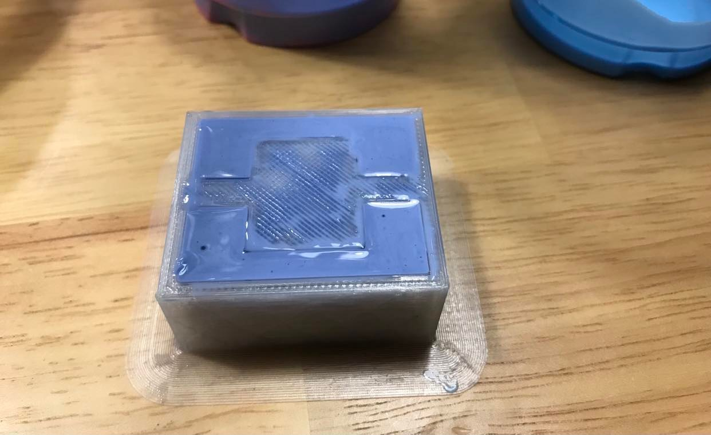
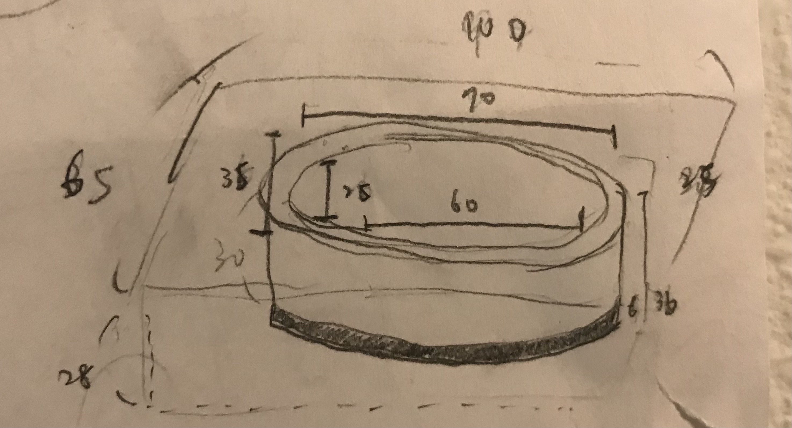
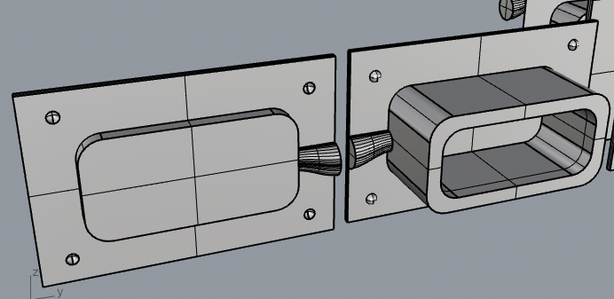
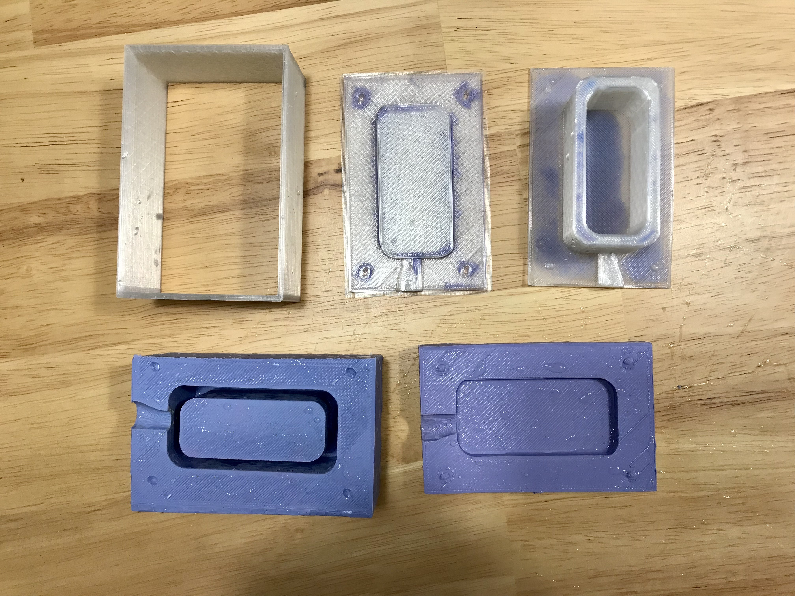
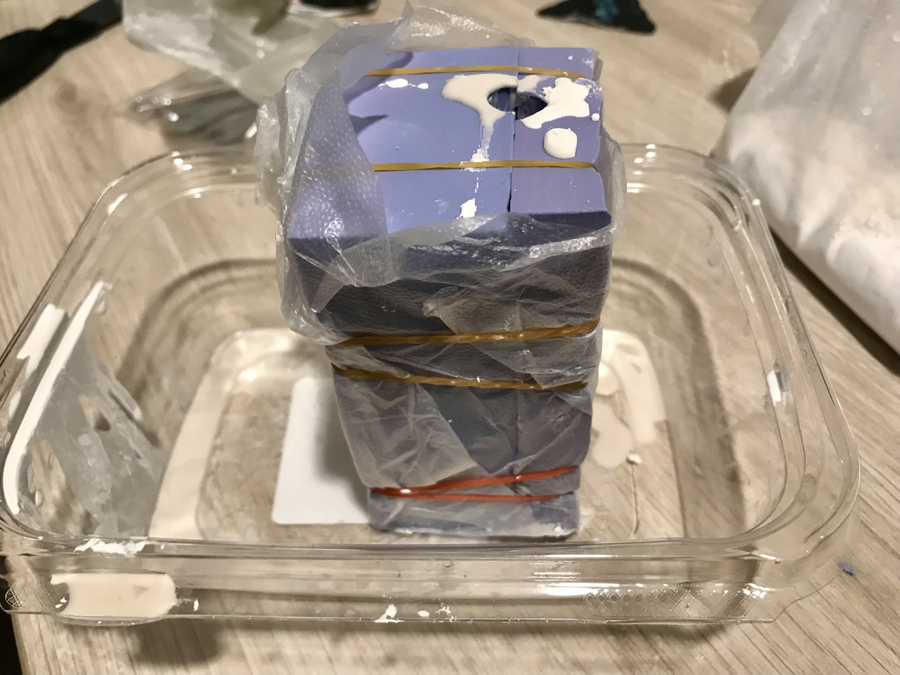
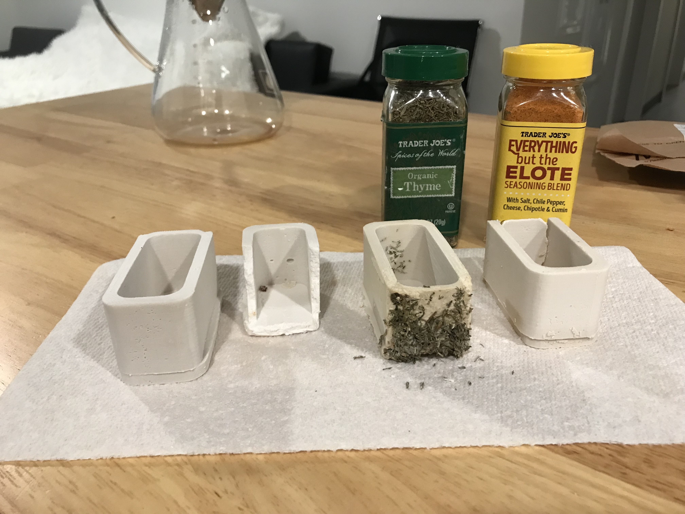

Recap on Last Week
Last week, I intended to mold a U-shaped container, but eventually decided to mold a square first. Unfortunately, my after pouring the Woomoo into the 3D printed meta mold, I wasn't able to pull it out, so it remained as the image below
A Redo
Therefore, for this week, I decided to redo everything, starting from creating a new shape in Rhino. Since I was starting from scratch, I decided to create a container as I originally planned last week, so I tried visualizing it first by drawing
Afterwards, I created the meta-mold using Rhino as shown below. This step took me a lot of time; eventually I decided to separate the mold by the bottom of the containter and the wall.
To make it easier to remove the mold, I decided to create a separate wall for the meta-mold. Next, I printed out all 3 pieces of the meta mold and poured Woomoo into them to create the actual mold I need
Lastly, I mixed up hydrostone powder with water, and poured it into the mold. I used plastic wrap and rubber bands to fix the two molds together.
The first piece came out well. For the second piece, I was worried that I'd run out of hydrostone powder so I added less powder; unfortunately, it was too watery so the paster couldn't form a complete shape. For the third piece, I added more powder. Besides that, I also wanted to create some patterns so I added some Thyme inside the mixture. However, it seemed like the Thyme had a much smaller density so all of them floated towards the top of the mold. Therefore, there wasn't enough clay at the top to form a more complete shape. For the last piece, I added Elolte because I thought it would be able to menlt in the clay and add some color. The color didn't reallly change, and because I ran out of the powder, so again the mixture was a bit too watery. Overall, the pieces didn't come out perfectly, but I've learned how important it is to add enough powder and to consider the density of other elements that I want to add into the mixture.
-----
Below is the source files that I created for the container:
3dm, Slt, gcode files-----
Biggest thanks to Xenia and the 533 Support Group for all the help!